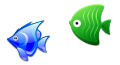
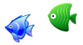

 Match-3 файтинг с элементами RPG. Игра создана по мотивам вселенной "Звёздные воины". Вам даётся выбор встать на сторону света, выбрав Люк Скайуокера или на сторону тьмы, выбрав Дарт Вейдера. В игре вы встретите более 60 персонажей которые будут в вашей команде, и побываете на 15 ключевых планетах.
Match-3 файтинг с элементами RPG. Игра создана по мотивам вселенной "Звёздные воины". Вам даётся выбор встать на сторону света, выбрав Люк Скайуокера или на сторону тьмы, выбрав Дарт Вейдера. В игре вы встретите более 60 персонажей которые будут в вашей команде, и побываете на 15 ключевых планетах.
 Match-3 файтинг с элементами RPG. Игра создана по мотивам серии видео игр "Смертельная битва" некогда завоевавшая сердца всех любителей жанра файтинга, и сейчас предстаёт перед вами в новом свете в виде казуальной игры в стиле "три в ряд" с элементами RPG.
Match-3 файтинг с элементами RPG. Игра создана по мотивам серии видео игр "Смертельная битва" некогда завоевавшая сердца всех любителей жанра файтинга, и сейчас предстаёт перед вами в новом свете в виде казуальной игры в стиле "три в ряд" с элементами RPG.
Контакты.Руководитель: Сомов Павел ВитальевичE-mail: pavel_somov@mail.ru Телефон: 050-47-66-370 Разработчик: Сомов Евгений ПавловичE-mail: catfish.studio.lg.ua@gmail.com г. Луганск |